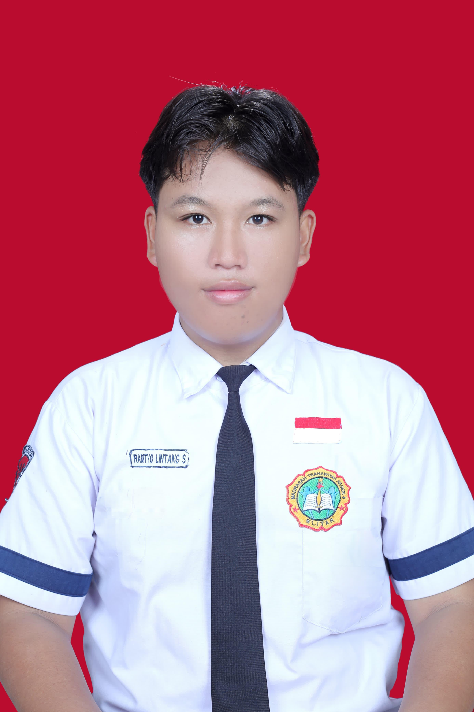
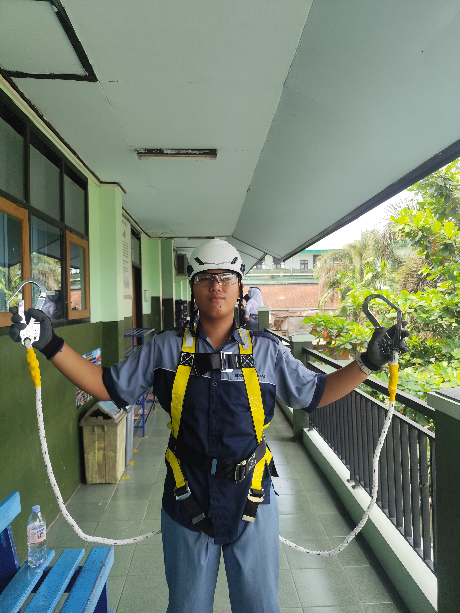
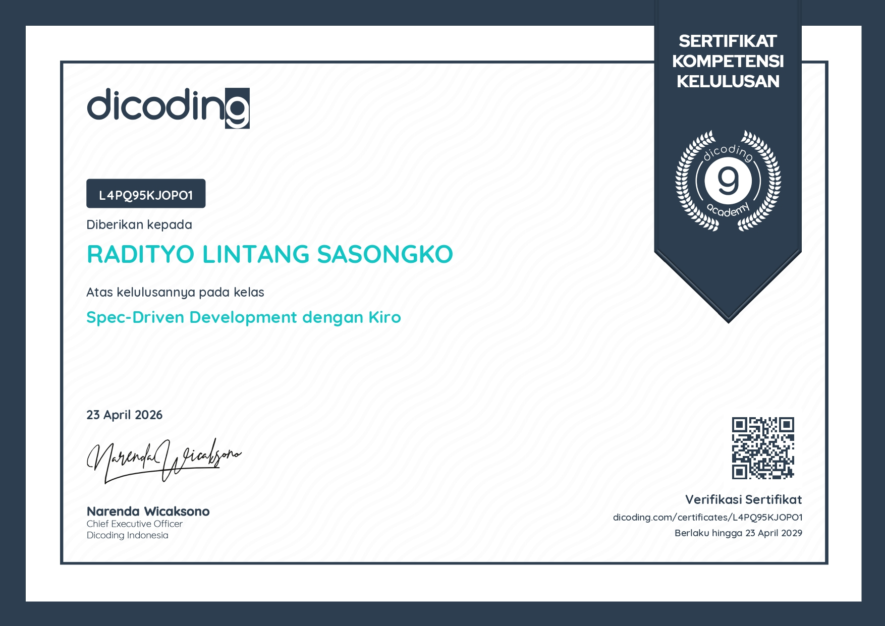

Radityo Lintang Sasongko
SMK TKJ Student • Networking & System Enthusiast
Download CV ✉ Kirim EmailAbout Me
Nama: Radityo Lintang Sasongko
Umur: 16 Tahun
Sekolah: SMK Islam 1 Blitar
Siswa jurusan Teknik Komputer dan Jaringan (TKJ) yang sedang mendalami jaringan komputer, instalasi sistem operasi, serta konfigurasi perangkat jaringan dasar.
Fokus Pengembangan
- Administrasi Jaringan Dasar
- Konfigurasi MikroTik & Routing
- Manajemen IP Address
- Instalasi & Troubleshooting Sistem
- Simulasi Topologi Jaringan
Keahlian TKJ
- Perakitan & Troubleshooting PC
- Instalasi Windows & Basic Linux
- Crimping Kabel UTP (Straight & Cross)
- IP Addressing & Topologi Dasar
- Cisco Packet Tracer (Basic Simulation)
Pengalaman Praktik
- Crimping kabel LAN dan pengujian koneksi
- Splicing Fiber Optic
- Membuat jaringan LAN sederhana di lab sekolah
- Instal ulang sistem operasi
- Simulasi jaringan menggunakan Cisco Packet Tracer
Mini Project TKJ
Jaringan LAN Sederhana
Konfigurasi IP manual dan pengujian koneksi menggunakan ping.
Simulasi Topologi
Membangun dan menguji topologi jaringan dasar.
Konfigurasi MikroTik
Setting dasar router agar jaringan terhubung internet.
Progress Belajar



Tujuan Karier
Mengembangkan kemampuan di bidang jaringan komputer dan sistem, serta menjadi teknisi jaringan yang kompeten dan profesional.
Pengalaman Organisasi

IPNU

Pramuka

Kommits TKJ